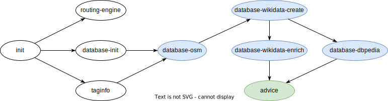
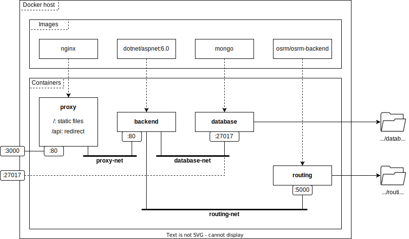

Administrator's guide
Data preparation provides a step-by-step procedure on how to integrate data from six different sources and prepare it for running SmartWalk.
Once data is ready, read Running the app to learn how to get the application up and running in development and production settings.
If something is not working as expected, you might find Troubleshooting helpful before searching for a solution on the Web.
Prerequisites
SmartWalk is essentially cross-platform. However, Unix utilities simplify certain aspects of system maintenance. We assume that the application will run on Unix-like environments, such as Linux or Windows Subsystem for Linux.
Please ensure that the following programs are installed on the target system:
- Docker
- .NET SDK v6.0
- Git
- GNU Bash, Make, Tar, and Wget
- Node.js v18.x (install via nvm)
Warning
If mentioned, preserve versions of packages due to library dependencies.
Clone the repository with submodules and navigate to its root folder:
$ git clone --recurse-submodules https://github.com/zhukovdm/smartwalk.git
$ cd ./smartwalk/
ADVICE: Docker-related commands require the current user to be a member of the docker group to avoid using sudo (or similar) repeatedly. See details at Manage Docker as a non-root user.
Data preparation
This section explains how to prepare data for two system components: the Database (entity store and index) and the Routing engine.
Warning
The complexity of extracting and building data structures depends on the size of a particular region and might be time- and resource-consuming, especially when processing OSM dumps.
Initialization
Navigate to the data folder, assuming you are in the root folder of the smartwalk repository:
$ cd ./data/
Decide which part of the world you are interested in. Download the corresponding pbf-file at Geofabrik, and store it in the ./assets/osm-maps/ folder. As an example, the following command makes use of the wget utility to obtain the latest dump of the Czech Republic:
$ wget \
-O ./assets/osm-maps/czech-republic-latest.osm.pbf \
https://download.geofabrik.de/europe/czech-republic-latest.osm.pbf
Open Makefile and set the value of REGION_FILE accordingly. Some of the OSM dumps are quite large and additional refinement might be necessary. There are four variables REGION_X, where suffix X can be any of W (West), N (North), E (East), or S (South), defining a bounding box. Entities outside this box are filtered out. To switch off filtering, set W=-180.0, N=85.06, E=180.0, and S=-85.06 (see EPSG3857 for details).
Create folders for storing data, and restore project dependencies:
$ make init
Routing engine
Build a data structure for the routing engine:
$ make routing-engine
The command pulls this Docker image and builds the search structure in several consecutive phases. The results are stored in the ./assets/routing-engine/ folder.
ADVICE: An instance of OSRM backend is able to load only one osrm-file at a time. This limitation can be overcome via merging (see osmosis).
ADVICE: It is possible to extract routing data for several regions and keep all files in the same folder as long as the original pbf-files have distinct names. Use environment variables to select a part of the world on engine start.
Entity store and index
Start up a containerized database instance:
$ docker compose up -d
ADVICE: Enter docker container ls repeatedly to print out the list of existing containers. Wait until smartwalk-database is healthy.
Clean up all previous data, create new collections and indexes:
$ make database-init
Obtain the most popular OSM keys from Taginfo and store results in the ./assets/taginfo/ folder:
$ make taginfo
ADVICE: A list of tags can be extended by altering Makefile, although this is not enough to enable their full potential. The constructor of KeywordExtractor shall reflect changes as well. Never remove tags from the list as it may brake things unexpectedly. Modifying tag list is not a typical operation and may require deeper knowledge of the system.
Extract entities from the pbf-file:
$ make database-osm
As part of the procedure, the routine makes several GET requests to the Overpass API. A query is configured to time out after 100 seconds, though the server usually responds within the first 10.
ADVICE: To make queries feasible for the Overpass API, the selected bounding box is divided into smaller pieces. The recipe has two switches --rows and --cols defining the grid.
Create stubs for new entities from the Wikidata knowledge graph:
$ make database-wikidata-create
The script attempts to fetch data from a SPARQL endpoint. Requests may time out after one minute. Large regions are more likely to result in failures. Hence, the numeric constants were specifically chosen for the test setup and may not be suitable for other cases.
ADVICE: The recipe has --rows and --cols switches with functionality similar to database-osm.
Enrich the current dataset with information from Wikidata:
$ make database-wikidata-enrich
Enrich the current dataset with information from the DBPedia knowledge graph:
$ make database-dbpedia
Collect supporting data to aid autocomplete functionality:
$ make advice
Finally, stop the database instance:
$ docker compose down
All relevant files are stored in the ./assets/database/ folder.
Incremental updates
The system supports incremental updates to incorporate new versions of datasets. It is possible to re-run blue-highlighted commands with no impact on data integrity. The programs are designed to update only defined properties without replacing entities, acting as an idempotent function.
advice should be re-generated whenever the database state is altered.

Dumping database
Dump the current database state:
$ make dump
The command creates keyword.txt and place.txt in the ./assets/dump/ folder.
If necessary, archive these files for publishing:
$ cd ./assets/dump/
$ tar -czf smartwalk-[kind]-[timestamp].tar.gz *.txt
Restoring database
Ensure that a database container is up and running, see Entity store and index for more details. Clean up the database and restore the state from files:
$ make init && make database-init && make restore
The restore procedure expects keyword.txt and place.txt to be in the ./assets/dump/ folder. Otherwise, it fails.
Examples of archived dumps can be found here. Those having prod in their names are the most data-rich covering beautiful Prague.
If necessary, unpack a downloaded archive as follows:
$ cd ./assets/dump/
$ tar -xzf smartwalk-[kind]-[timestamp].tar.gz
Running the app
The purpose of this section is to explain how to start the system in development and production modes. We assume that you are in the root folder of the smartwalk repository and all relevant data have been extracted or restored and are available in their respective folders.
Development environment
This environment is intended primarily for developers and testers. It enables controlling parts of the system independently.
There are four system components involved in the setup: the frontend, backend, database, and routing engine. The first two run directly in the terminal, while the last two are Docker containers. The table below summarizes their roles and the mapping of system ports.
| Component | Ports | Role |
|---|---|---|
| database | localhost:27017 | Entity store and index |
| routing | localhost:5000 | Routing engine |
| backend | localhost:5017 | Application logic |
| frontend | localhost:3000 | Static files (hot reload) |
Note
For convenience, components can be started and stopped directly from the smartwalk root folder. Please refer to Makefile. Recipe names follow the pattern [component_name]-dev[-stop].
Database
Start and stop an instance of database using database-dev[-stop] from Makefile.
Routing engine
Start and stop an instance of routing engine using routing-dev[-stop] from Makefile.
Set OSRM_REGION_FILE in .env.development to load a region other than the Czech Republic.
Backend
The project is located in ./app/backend/. Run dotnet run from there to start the backend in the terminal, and stop it by pressing Ctrl+C. Read more about other commands in README.md.
Warning
This component requires the database to be up and running. Otherwise, it fails to start.
The source code uses SMARTWALK_MONGO_CONN_STR and SMARTWALK_OSRM_BASE_URL environment variables. Adjust launchSettings.json respectively if you wish to alter the default port configuration.
Frontend
Find the project in ./app/frontend/. Run npm start from there to start the frontend in the terminal, and stop it by pressing Ctrl+C. Learn more about other commands in README.md.
The source code uses REACT_APP_SMARTWALK_API_ORIGIN environment variable. Set its value in the .env.development file if you wish to run backend on another port.
Production environment
This environment is a tightly coupled bundle consisting of four interconnected Docker containers; its detailed schema is shown in the picture below.

Note
The database exposes port 27017 for manual diagnostic and performance testing. Hide it if none of the mentioned reasons is your case.
Start and stop production environment from the root folder of the repo:
$ make prod[-stop]
ADVICE: All containers implement healthcheck, run docker container ls to see their state.
The respective environment variables are defined in the .env.production file.
Troubleshooting
WSL runs out of memory
If your WSL consumes too much memory, Windows might suddenly terminate the entire process without prior notice. Try to mitigate the issue by extending the swap file; set swap=XXGB in the .wslconfig file. For more details, see Example .wslconfig file.
A container starts for too long
If any of the containers is unhealthy or starting for too long (healthcheck has failed repeatedly on the background), replace [container_name] placeholder by the name of a problematic instance and press Enter to find out the reason:
$ docker container ls -a
CONTAINER ID IMAGE ... NAMES
... ... ... ...
377fe35d4472 smartwalk/proxy:v1.0.0 ... smartwalk-proxy
... ... ... ...
$ docker inspect --format "{{json .State.Health }}" [container_name]
Nothing seems to help
If the system does not work properly and you do not know what to do, clean up files and start from scratch. As the first step, remove SmartWalk images:
$ docker image rm smartwalk/proxy
$ docker image rm smartwalk/backend
$ docker image rm smartwalk/routing
Clean up unused Docker files (cached build files, dangling images and volumes, etc.):
Warning
Use this command with caution as it may introduce undesired changes into your Docker host. Read about side effects here.
$ docker system prune --volumes